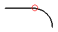

Tangent command (XpresRoute environment)
Note:
To access XpresRoute, click Tools→Environs→XpresRoute.
Makes an arc segment of a path tangent with a line or arc segment.

How do I
Apply an axis dimension relationshipApply a Tangent relationship to a tube path segment
Apply a parallel relationship to a tube path segment
Apply a connect relationship to a tube path segment
Apply a coaxial relationship to a tube path segment
Look up more details
Applying relationships and dimensions to path segmentsAxis Dimension command
Axis Dimension command bar
Parallel command
Connect command
Coaxial command